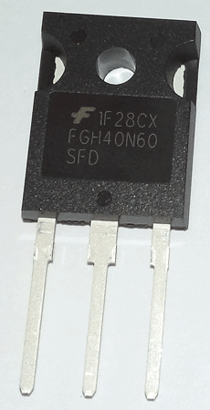
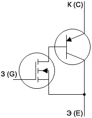
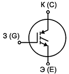
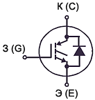
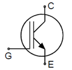
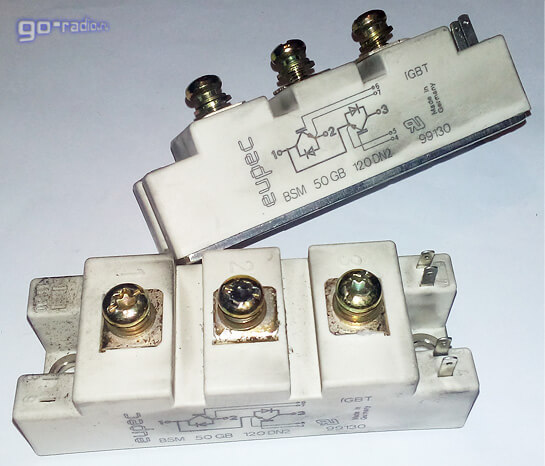

IGBT-транзистор
(Биполярный транзистор с изолированным затвором)
В современной силовой электронике широкое распространение получили так называемые транзисторы IGBT. Данная аббревиатура расшифровывается как Insulated Gate Bipolar Transistor (Биполярный Транзистор с Изолированным Затвором - БТИЗ).
БТИЗ представляет собой электронный силовой прибор, который используется в качестве мощного электронного ключа, устанавливаемого в импульсные источники питания, инверторы, а также системы управления электроприводами.
IGBT транзистор представляет собой гибрид полевого и биполярного транзистора. Данное сочетание привело к тому, что он унаследовал положительные качества, как полевого транзистора, так и биполярного.
Суть его работы заключается в том, что полевой транзистор управляет мощным биполярным. В результате переключение мощной нагрузки становиться возможным при малой мощности, так как управляющий сигнал поступает на затвор полевого транзистора.

Рис. 1 - IGBT-транзистор FGH40N60SFD
Внутренняя структура БТИЗ – это каскадное подключение двух электронных входных ключей, которые управляют оконечным плюсом. Далее на рисунке показана упрощённая эквивалентная схема биполярного транзистора с изолированным затвором.

Рис. 2 - Упрощённая эквивалентная схема БТИЗ
Весь процесс работы БТИЗ может быть представлен двумя этапами: как только подается положительное напряжение, между затвором и истоком открывается полевой транзистор, то есть образуется n-канал между истоком и стоком. При этом начинает происходить движение зарядов из области n в область p, что влечет за собой открытие биполярного транзистора, в результате чего от эмиттера к коллектору устремляется ток.
История появления БТИЗ
Впервые мощные полевые транзисторы появились в 1973 году, а уже в 1979 году была предложена схема составного транзистора, оснащенного управляемым биполярным транзистором при помощи полевого с изолированным затвором. В ходе тестов было установлено, что при использовании биполярного транзистора в качестве ключа на основном транзисторе насыщение отсутствует, а это значительно снижает задержку в случае выключения ключа.
Несколько позже, в 1985 году был представлен БТИЗ, отличительной особенностью которого была плоская структура, диапазон рабочих напряжений стал больше. Так, при высоких напряжениях и больших токах потери в открытом состоянии очень малы. При этом устройство имеет похожие характеристики переключения и проводимости, как у биполярного транзистора, а управление осуществляется за счет напряжения.
Первое поколение устройств имело некоторые недостатки: переключение происходило медленно, да и надежностью они не отличались. Второе поколение увидело свет в 90-х годах, а третье поколение выпускается по настоящее время: в них устранены подобнее недостатки, они имеют высокое сопротивление на входе, управляемая мощность отличается низким уровнем, а во включенном состоянии остаточное напряжение также имеет низкие показатели.
Уже сейчас в магазинах электронных компонентов доступны IGBT транзисторы, которые могут коммутировать токи в диапазоне от нескольких десятков до сотен ампер (Iкэ max), а рабочее напряжение (Uкэ max) может изменяться от нескольких сотен до тысячи и более вольт.
Условное обозначение БТИЗ (IGBT) на принципиальных схемах
Поскольку БТИЗ имеет комбинированную структуру из полевого и биполярного транзистора, то и его выводы получили названия затвор - (З, управляющий электрод), эмиттер (Э) и коллектор (К). В зарубежных схемах вывод затвора обозначается буквой G, вывод эмиттера – E, а вывод коллектора – C.



Рис. 3 - Условное обозначение БТИЗ (IGBT)
Особенности и сферы применения БТИЗ.
Отличительные качества IGBT:
- Управляется напряжением (как любой полевой транзистор);
- Имеют низкие потери в открытом состоянии;
- Могут работать при температуре более 100°C;
- Способны работать с напряжением более 1000 В и мощностями свыше 5 кВт.
Перечисленные качества позволили применять IGBT транзисторы в инверторах, частотно-регулируемых приводах и в импульсных регуляторах тока. Кроме того, они часто применяются в источниках сварочного тока, в системах управления мощными электроприводами, которые устанавливаются, например, на электротранспорте. Такое решение значительно увеличивает КПД и обеспечивает высокую плавность хода.
Кроме того, устанавливают данные устройства в источниках бесперебойного питания и в сетях с высоким напряжением. Их можно обнаружить в составе электронных схем стиральных, швейных и посудомоечных машин, инверторных кондиционеров, насосов, системах электронного зажигания автомобилей, системах электропитания серверного и телекоммуникационного оборудования.
IGBT-модули
IGBT-транзисторы выпускаются не только в виде отдельных компонентов, но и в виде сборок и модулей. На рис. 5 показан мощный IGBT-модуль из частотного преобразователя (так называемого "частотника") для управления трёхфазным двигателем.

Рис. 4 - IGBT-модуль BSM 50GB 120DN2
Схемотехника частотника такова, что технологичнее применять сборку или модуль, в котором установлено несколько IGBT-транзисторов. Так, например, в данном модуле два IGBT-транзистора (полумост).
Стоит отметить, что IGBT и MOSFET в некоторых случаях являются взаимозаменяемыми, но для высокочастотных низковольтных каскадов предпочтение отдают транзисторам MOSFET, а для мощных высоковольтных – IGBT.
Так, например, IGBT транзисторы прекрасно выполняют свои функции при рабочих частотах до 20-50 кГц. При более высоких частотах у данного типа транзисторов увеличиваются потери. Также наиболее полно возможности IGBT транзисторов проявляются при рабочем напряжении более 300-400 В. Поэтому биполярные транзисторы с изолированным затвором легче всего обнаружить в высоковольтных и мощных электроприборах, промышленном оборудовании.